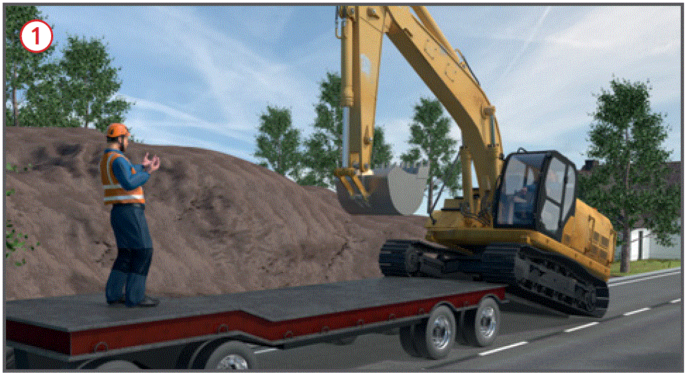
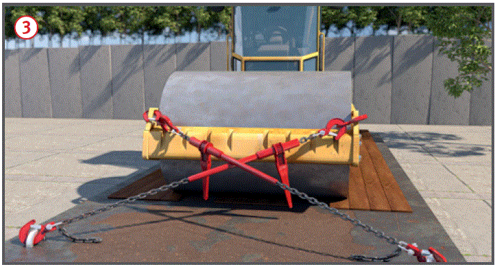
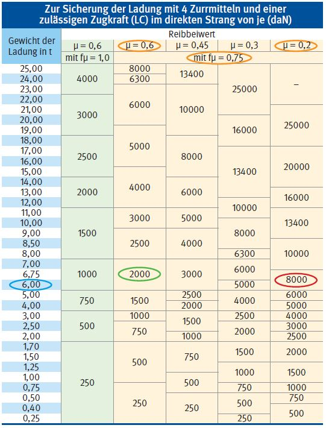

Transport von Baumaschinen
|
|

Gefährdungen
- Bei nicht fachgerechter Beladung und Sicherung, können Baumaschinen bei der Beladung und während des Transportes von der Ladefläche kippen oder rutschen und Personen- und Sachschäden verursachen.
Allgemeines
- Transportwege vorher festlegen und Befahrbarkeit bei Überschreitung der zulässigen Gesamthöhe von 4 m oder dem zugelassenen Gesamtgewicht prüfen, z. B. bei Brückenbauwerken.
Schutzmaßnahmen
- Auf- und Abladen von Baumaschinen nur auf tragfähigem Untergrund durchführen. Transportfahrzeug horizontal ausrichten.
- Das Gewicht der Ladung ermitteln, z. B. Kennzeichnung an der Baumaschine.
- Für den Transport nur geeignete und ausreichend tragfähige Transportmittel verwenden.
- Die Ladefläche und das Fahrwerk der zu verladenden Baumaschinen vor dem Verladen von Schlamm, Schnee und Eis reinigen.
Zusätzliche Hinweise für Zug- und Transportfahrzeuge
- Ladungsschwerpunkt möglichst auf der Längsmittellinie der Ladefläche des Transportfahrzeuges ausrichten.
- Zulässige Achs-, Sattel- oder Stützlasten nicht überschreiten.
- Mindestachslast der Lenkachse nicht unterschreiten.
- Lastverteilungsplan des Fahrzeuges beim Beladen berücksichtigen.
Zusätzliche Hinweise für die Verwendung von Zurrmitteln
- Zurrmittel (Drahtseile, Ketten und Gurte u. a.) nach dem Gewicht der zu transportierenden Baumaschine bemessen und auswählen.
- Zurrmittel prüfen
- vor jeder Benutzung auf augenscheinliche Mängel durch den Benutzer (z. B. Fahrzeugführer),
- i. d. R. einmal jährlich durch eine "zur Prüfung befähigte Person" (z. B. Sachkundiger).
- Beim Diagonalzurren pro Ladegut immer vier Zurrmittel verwenden.
- Zurrpunkte des Transportmittels nicht überlasten
 .
.

Zurrpunktschild nach DIN EN 12640 (Mindestgröße 200/150 mm)
Zusätzliche Hinweise zum Befahren der Laderampe
- Geeignete Auffahrrampen verwenden
 .
.
- Beim Auf- und Abladen kleinsten Gang wählen und Schaltung während der Fahrt nicht betätigen (Beachtung der Betriebsanleitung der Baumaschine).
- Beim Befahren der Rampe darf sich niemand neben und hinter der Rampe aufhalten (Kipp- und Abrollgefahr).
- Beim Befahren von schrägen Rampen und Auffahreinrichtungen Einweiser einsetzen. Aufenthalt des Einweisers außerhalb des Gefahrbereiches und gut sichtbar für den Baumaschinenführer.

Zusätzliche Hinweise für Baumaschinen
- Baumaschinen auf der Ladefläche befestigen, Feststellbremsen anziehen und weitere Sicherung durchführen, z. B. mit Zurrgurten, Zurrketten
 .
.
- Arbeitseinrichtungen von Baumaschinen festsetzen.
- Vor Beginn des Transportes mechanische Schwenkwerkbremse z. B. bei Baggern bzw. Knickgelenksicherung z. B. bei Radladern, Walzen oder Muldenkipper arretieren.
- Alle Deckel, Klappen, Fenster und Türen verschließen.
Zusätzliche Hinweise für den Transport durch Ankuppeln und Abschleppen
- Beim Ankuppeln darf sich niemand zwischen Schleppfahrzeug und Baumaschine aufhalten. Ausnahme: Der Kupplungsvorgang ist vom Fahrer des heransetzenden Fahrzeuges einzusehen.
- Starre Zuggabeln vor dem An- und Abkuppeln durch Stützrollen abstützen.
- Ungebremste Fahrzeuge nur mit starren Abschleppstangen abschleppen.
- Fahrzeuggeschwindigkeit je nach Ladung auf Straßen- und Verkehrsverhältnisse abstimmen.
Zusätzliche Hinweise für die Transportfahrt
- Zurrmittel während der Transportfahrt, z. B. in regelmäßigen Zeitabständen, nach einer Vollbremsung oder plötzlicher Ausweichbewegung und nach jeder Pause, in der das Fahrzeug und die Ladung unbeaufsichtigt war, überprüfen.

α = Vertikaler Zurrwinkel
gemessen zwischen der Ladeflächenoberkante und dem Zurrmittel
βx = Horizontaler Zurrwinkel
gemessen zwischen der längs Außenkante der Ladefläche und dem Zurrmittel
- Winkelbereiche der Zurrwinkel beim Direktzurren beachten
 .
.
α = 20° bis 65° (Sicherung gegen Kippen und Rutschen)
α = < 20° (Sicherung nur gegen Rutschen der Ladung)
ßx = 6° bis 55°
- Reibbeiwert zwischen Ladung und Transportfläche ermitteln.
- Aus der Tabelle die erforderliche Zugkraft ablesen.
Beispiel: Ladung Radlader
Gewicht = 6,0 t
Reibbeiwert µ = 0,6 mit fµ = 0,75
(saubere Gummiräder/besenreine Ladefläche)
Reibbeiwert µ = 0,2
(verschmutzte Gummiräder/unsaubere Ladefläche bzw. Eis, Schnee oder Frost auf der Ladefläche).
Aus der Tabelle: Erforderliche Zugkraft pro Strang 2000 daN bei
einem Reibbeiwert µ = 0,6 bzw. 8000 daN bei einem Reibbeiwert µ = 0,2.

07/2021